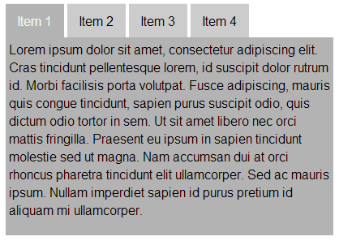
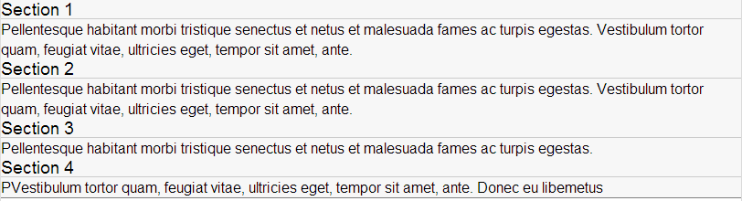

INF 362 Unit 3
Web Design
RAT
iRAT
10 Minutes
iRAT
5 Minutes
iRAT
1 Minute
iRAT
tRAT
tRAT
15 Minutes
tRAT
10 Minutes
tRAT
5 Minutes
tRAT
1 Minute
How did you do?
Appeals Process
Mini Lecture
Clarification
Some things to note
Activities
Sublime Text 2
Editor of Choice
Getting to Know GitHub
Let's install GitHub, and log in
Assemble!
What is the best summarization of?
- Pull Request
- Fork
- Commit
- Push/Sync
- Clone
What would you use a github issue for?
What would you use a branch for?
Clone
Clone your team's repo to your computer
Copy Folder Into ST2
Commit
Make a change to your code and commit it.
Sync That Commit!
How'd you do?
Branching
Click the "master" branch icon and create a new branch.
Call it "gh-pages"
Push That Branch
MAGIC!!!!! (you can even work right out of gh-pages)
How can YOU utilize GH-Pages?
Fork to your own, create gh-pages branch
Let's Fork!
Fork your own version of the repo
Make your own commit
sync it
Create your own gh-pages branch
View it: username.github.io/repo-name
Pull it back in.
Goto Github.com
Find your repo
Initiate Pull Request
Note about branching
You can branch instead of fork if you are testing locally.
Can be helpful, but not when we get into Jekyll.
Note about Pull Requests
Merge Conflicts
<<<<<<< Head:my-commit
Line 3: Hello World!
=======
Line 3: Hello Mom!
>>>>>>> 4h42k2b2dh36df8:my-commit
Breakdown
<<<<<<< Head:my-commit
Line 3: Hello World!
=======
Line 3: Hello Mom!
>>>>>>> 4h42k2b2dh36df8:my-commit
Issues
Github.com > click issues
Use issues as a forum for discussion.
Look over your sketch sheets
Develop as many tasks that you can think of to implement those sketches into code.
(at least 10)
Now assign them
Look over each task and assign each one to a specific person
Categorize them
Layout?
Design?
Interaction?
etc
Milestones
You just created your milestones for your mid-term
Create Issues
...and assign them.
Create a new milestone
In issues list, create your milestones
Tips
- Don't make a change unless there's an issue created for it
- Assign to yourself or someone else.
- Only work on issues you are assigned to.
- Close issues from commits
closes #15
- Reference Users in comments
@esteinborn does this look right?
- Use labels to identify bugs etc.

Someone is lagging behind, what are the possible ways to address this.
Rank the following in order of Mobie First-ness
- Meta Viewport tag
- Content Design
- Fancy Navigation
- Touch Support
Place the following in order for Mobile First design
- UI Design
- Focused Content Design
- UX Design
- Color Choice
- Exciting new phone features
Next Time on...
INF 362!
Next Time on...
- Content
- Basic SASS (Prepros)
- RWD
- Grid
- Media Queries
- Typical Design Patterns
- Navigation
- Images
MVP for Site Should be:
- Forecloseure process in general
- Every Stage in detail 1-8
- stage 6: preparation for settlement conference (5 steps)
For Next Class
- What you SHOULDN'T be doing.
- Fonts on the Web
- What is the 300ms Delay, and how to avoid it (hint:fastclick)
- Read chapter 3 & 4 of RWD book. Skipping:
- 3.1 "max-width in Internet Explorer"
- 3.2 "in which it becomes clear that Windows hates us"
- 3.3 "Hail Alpha Loader, the conquering Hero"
- 4.1 Gloss over table 4.1 in "Meet the features"
- Read chapter 2 & 3 of SASS book
- Use command line or Prepros (or online: SassMeister)
- Read ch 3 UP TO "mixin arguments"
Midterm Project Criteria
Use Github issues to discuss project grading criteria
- full functionality
- color choice
- accessibility
- intuitive
- UX flows well
- not too much input for the user
Top 5
As a team decide on 5 grading criteria that you feel will equal a finished midterm.
We'll discuss next week and finalize
State of your project by next week:
- Based off Html5 BP (NOT A FORK) (remove "browse happy" prompt)
- All layout should be percentage-based
- Using Em's for precise measurement, PX only for body font declaration.
- Header, Footer, Basic navigation
- Fully flesh out issues from sketches
- Milestones created for Midterm and final drafts and FULL due dates.
TBL Teaching Assessment
Unit 3 - Day 2
"You are your biggest supporter"
Assign yourself to issues (and complete them), it will affect your grade.
Consolidate Project Plan
Your team needs to be working toward one set of goals. Each of you should pull up your project proposal, pitch them to the group and choose either the best one, or the best parts of 2 or more.
Note:Things to look for:
- Grammar
- Correct Dates
- No wild promises
Consolidate Style Tile
Your team needs to be working toward one set of goals. Each of you should pull up your project Style Tile, pitch them to the group and choose either the best one, or the best parts of 2 or more.
Note:Things to look for:
- Color Contrast
- Color Variety
- Appropriate Imagery
Midterm project critique criteria
What did you come up with?
Rank Top 5
Write Top 3
If tied, write 4th then 5th
SASS
Let's learn Prepros
- Setup
- Input -> Output
- Excludes
- Images
Set up Screen Share
IP on the screen.
Create a SCSS folder in your project
We'll be using SASS exclusively now.
Nest this CSS Rule
nav ul .first {}nav {
ul {
.first {}
}
}Nesting Attributes
font: {
family: Arial;
size: 20px;
weight: bold;
}Can be used on any hyphenated attributes.
Reference Parent Selector
-
a { & {..code..} }★ -
a { @parent {..code..} } -
a { @ref {..code..} } -
a {} @prev {..code..}
a {
color:red; }
&:hover {
color: blue; }How deep should you realistically nest CSS rules?
.list {}.list .nav {}.list .nav li {}★.list .nav li a {}.list .nav li a span {}
SASS Variables
Which of these is a valid variable in SASS?
-
$mq: min-width: 30em; -
$mq: 30em;★ -
$mq: 1.5;★ -
$mq: webkit-min-device-pixel-ratio;★
How would you bring in another stylesheet?
@import variables;import variables;@import "variables";★@import "_variables.scss";★import: variables;
Files starting with an "_" are called "partials" they are not compiled themselves, but are referenced from within other sass files.
Structuring SASS Files
@charset "UTF-8";
@import "variables";
@import "mixins";
@import "layout/scaffolding";
@import "layout/iefixes";
@import "vendor/jqueryui";
@import "components/missing-person";
@import "components/overlay";
@import "layout/print";Variables
Given the follow code snippet, how many variables should you create?
.main {
width: 5em; height: 5em;
box-sizing: border-box;
color: red;
content: "Hello World!";}
.secondary {
width: 5em; padding: 5em;
box-sizing: border-box;
color: red;
content: "Hello World!";}Give an example of when a variable would come in handy.
Extends
Given the follow code snippet, create an extend.
.main {
width: 5em; height: 5em;
box-sizing: border-box;
color: red;
content: "Hello World!";}
.secondary {
width: 5em; padding: 5em;
box-sizing: border-box;
color: green;
content: "Hello Buddy!";}Extends
Answer
.main {
width: 5em; height: 5em;
box-sizing: border-box;
color: red;
content: "Hello World!";}
.secondary {
@extend .main;
color: green;}Extends
What is the expected CSS output of this extend?
.error {
border: 1px;
background-color: red; }
.error.intrusion {
background: orange; }
.seriousError {
@extend .error;
border-width: 3px; }Extends
Wrong Answer...
.error {
border: 1px;
background-color: red; }
.error.intrusion {
background: orange; }
.seriousError {
border: 1px;
background-color: red;
border-width: 3px; }Extends
Answer
.error, .seriousError {
border: 1px;
background-color: red; }
.error.intrusion, .seriousError.intrusion {
background: orange; }
.seriousError {
border-width: 3px; }@extend works by inserting the extending selector (e.g. .seriousError) anywhere in the stylesheet that the extended selector (.e.g .error) appears.
When would it be useful to use multiple extends?
Functions
What color is this P tag in CSS?
$type: monster;
p {
@if $type == ocean {
color: blue;
} @else if $type == matador {
color: red;
} @else if $type == monster {
color: green;
} @else {
color: black;
}
}GREEN
Functions
@for $i from 1 through 3 {
.item-#{$i} { width: 2em * $i; }
}Functions
.item-1 {
width: 2em; }
.item-2 {
width: 4em; }
.item-3 {
width: 6em; }@each
@while
Mixins
How do you reference a mixin?
@mixin large-text {
font: {
family: Arial;
size: 20px;
weight: bold;
}
color: #ff0000;
}Mixins
.page-title {
@include large-text;
padding: 4px;
margin-top: 10px;
}Mixins + Arguments
How would you call this to make the color blue and width 1em?
@mixin cool-border($color, $width) {
border: {
color: $color;
width: $width;
style: dashed;
}
}p { @include cool-border(blue, 1em); }What is a good example of a time to use a mixin?
Color Functions
Which of the following makes a color darker?
-
darken();★ -
darker(); -
dark(); -
makeDark();
Color Functions
Which of the following makes a color lighter?
-
lighten();★ -
lighter(); -
light(); -
makeLight();
Color Functions
How do you properly initialize a darken function?
-
darken(#FFF, 20);★ -
darken(20, #FFF); -
darken(#FFF, 20%);★ -
darken(FFF, 20);
Color Functions
How do you properly initialize a complementary color function?
-
complement(#bada55);★ -
complement(#bada55, 20%); -
complement(#bada55, 20);★ -
#bada55 * complement();
The absence of a media query is...
- in fact the first media query. ★
- someone showing a clear lack of education.
- an error that needs no fixing.
- a placebo effect.
Start with the small screen first, then expand until it looks like shit.
Time for a breakpoint!
Media Queries
Which of the following is the correct Media Query Syntax?
-
@media screen and (min-width: 40em) {}★ -
@media not handheld, (max-width: 40em) {}★ -
@media (min-device-pixel-ratio: 2.0) {}★ -
@media print {}★ -
@media screen and (orientation: portrait) {}★
Media Queries in the Wild
Write a MQ that triggers with the following
Screen width must be at least 40em
AND Device must be in Landscape mode
@media (min-width: 40em) and (orientation: landscape) {}Be careful with orientation. Desktops are "landscape" so are all old (and possibly new) blackberry browsers...
Write a MQ that triggers with the following
Screen width must be no more than 40em
OR screen height must at least 50em
@media (max-width: 40em), (min-height: 50em) {}Write a MQ that triggers with the following
Not handheld devices
@media not handheld {}Sorry... not really possible, because...
Responsive Web Design
This is what you will do 70% of your work on, with, around, because of, in spite of, or because someone thought it didn't matter and you needed to prove them wrong.
So very, very wrong.
Create a Grid
mobile = 100%, after 50em, 1/3 width
HTML:
.grid{I'm a Grid!}*3SCSS:
.grid {background-color: lightblue;
padding: 1%;
margin: 0;}Not Easy, Right?
box-sizing: border-box;FTW!That's why we're using Foundation 5's Grid
Learn it. Love it. Use it.
Navigation can be hard
Luckily Foundation solves a lot of our issues.
Foundation Off-CanvasForm Fields
Which of the following is a best practice for laying out form fields?
- Label Left (large) Label Top (small) ★
- Label top (large) Label Left (small)
- Label Left (large) no Label (small)
- Label Inside (large) label top (small)
Dealing with Tabs
How would you handle this on mobile?
Dealing with lots of content
How would you handle this on mobile?
Next Time on...
INF 362!
- Peer Evals
- JavaScript
- CSS3
- Browser Compatbility
- Progressive Enhancement
- RWD Images
- Mobile Device Remote Inspection
Article Readings
Book Readings
Read Chapter 5 of RWD book
Play with and Implement Foundation 5
Do you like Sublime Text?
Sublime Text 2 Super course (compatible with 3 for the most part)
Parting Links
Where should our project be by next week?
- All base content from the PDF on their respective pages
- App flow should be established
- Navigation structure in place
- Utilizes F5 grid system
- Typography should start being tuned
- Only focused on Mobile styles for now
- Color scheme fully added as SASS variables
- Start looking for royalty free imagery (This may help start you off: Stock photos that don't suck
- Should have GH-Pages updated after each pull into master
- Start checking how it looks on your phones.